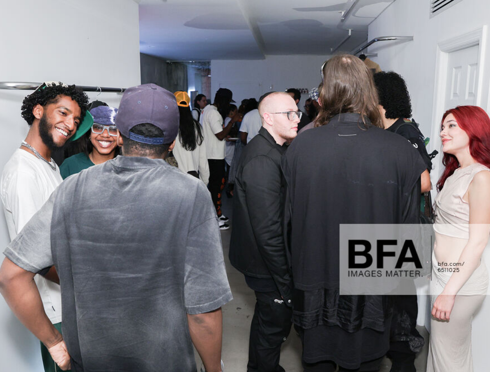

The following are some projects that I have worked on.
E3RD Grand Opening
For E3RD's grand opening, I collaborated with the set design artist and project manager to create an event that embodied the brand's identity. My focus was on aligning all elements with the brand's vision, ensuring an unforgettable launch experience.
FARFROMPRIVACY Collection
At Far From Privacy, I collaborated with the lead designer to develop a new collection. I sewed the samples for the collection and contributed to the sample-making process, enhancing efficiency and reducing waste through the use of CLO3D technology. This experience provided valuable insights into navigating a fast-paced industry.
Campaign Shoots

This was one of the various campaign shoots I assisted in and edited the results, collaborating with established photographers in the industry. This experience honed my skills in content curation and visual storytelling.
Marketing for Starvision
At Starvision, one of Indonesia's leading movie production companies, I contributed to the marketing and promotional campaigns for two of their major film releases. Working on these projects gave me insight into the entertainment industry's unique marketing landscape and taught me how to design impactful campaigns tailored to diverse audiences, amplifying each film's reach.